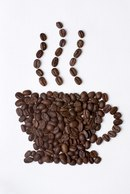

parrafo (elemento de bloque 1). Los elementos de bloque se apilan (uno encima del otro)
parrafo (elemento de bloque 2).
parrafo (elemento de bloque 3).
link (elemento de linea 1). Los elementos de linea se juntan (uno al lado del otro) link (elemento de linea 2). link (elemento de linea 3). link (elemento de linea 4). link (elemento de linea 5). link (elemento de linea 6). link (elemento de linea 7). link (elemento de linea 8). link (elemento de linea 9). 